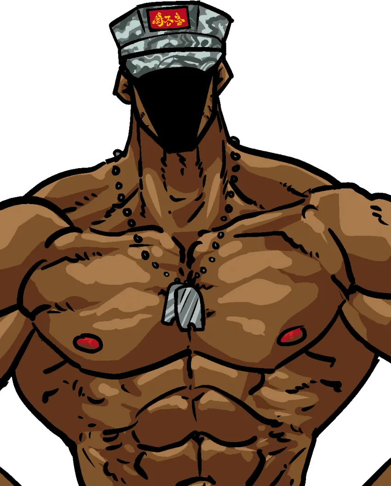
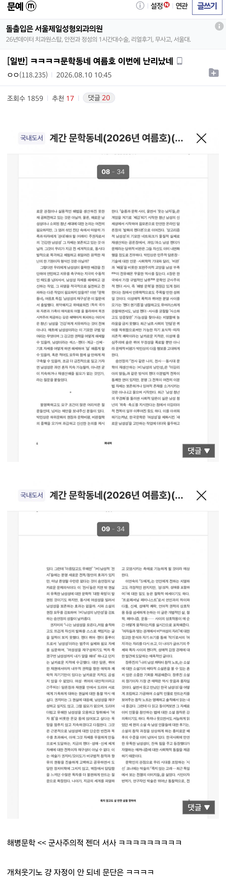
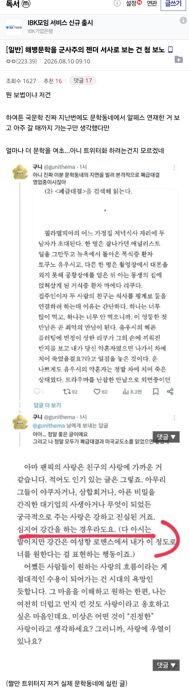

최근 해병문학에 대해서 한국문학계의 놀라운 주장이 시작됨


문학동네 = 한국 문학계에서 손 꼽히는 대표적인 한국문학 출판사.
즉 '일부'라고 꼬리 자르기엔 영향력이 존나 큼

최근 해병문학에 대해서 한국문학계의 놀라운 주장이 시작됨


문학동네 = 한국 문학계에서 손 꼽히는 대표적인 한국문학 출판사.
즉 '일부'라고 꼬리 자르기엔 영향력이 존나 큼
댓글
수집 당시 댓글 15개
감귤온천 · 20 시간 전
여간 기합이 아니였다
제대로알고하는헤이트 · 19 시간 전
한국문학은 부고만
팡팡팡팡팡팡 · 19 시간 전
자멸하면 그만이긴 함 글의 입지가 안 그래도 좁아지는데 어떻게든 저변 늘리려고 똥꼬쑈를 해야할 판에 독자 폭을 지들이 좁혀서 가두리를 치고 있으니. 다 망해야 새로이 설 수 있음ㅋㅋ
초시공무적여고생 · 19 시간 전
군대랑 남자 게이들 ㅈㄴ 나오니까 군사주의적 젠더 서사라는건가? ㅋㅋㅋ
구리네스 · 19 시간 전
돈도 안되는 문학이 얼마나 쩌든거냐 재네말고는 읽고 소비해줒사람조차없단거자너
베댓전문가 · 19 시간 전
그러니까 여자들이 읽고 흥건히 젖을 정도로 야한 게이물이자 여자들의 군대 문화에 대한 환상을 충족시켜줄 만큼의 리얼리티가 섞인 군대문학이라 그네들의 입맛에 딱 맞다는 거지?
쿠폰아까워 · 19 시간 전
강간을 순애로 만들어버리네ㅋㅋ 강간은 한 인생을 바쳐 여자를 원하는거니까 순애라던 디씨글이 생각난다
네비두라 · 17 시간 전
여성향 로맨스소설에선 강간도 여자들의 로망중 하나라는건가?
VSZMA · 16 시간 전
말하자면 장르 문법임. 마치 NTR물에서 여주인공은 빡대가리가 되어야 한다는 규칙이나, 남성향에서 연인 사이가 아닌 여자와 관계를 맺었는데 그땐 좋다던 여자가 며칠 뒤 남주를 신고하는 상황 같은건 다루지 않는 것처럼 여성향 로맨스의 남주는 강압적인 애정을 행사할 정도로 여주를 원할 뿐 현실의 성범죄에서 뒤따를만한 문제들은 일으키지 않는다는 일종의 합의가 있는거지. 물론 지들은 저러면서 남의 장르에는 현실이 어쩌니 저쩌니 시비 털고 다니니까 문제지만.
잡학좋아하는사람 · 13 시간 전
상당히 메이저한 페티쉬임 관련 태그로 폭군이란 키워드가 있는데 19금 수위면 여주 강압적으로 다루거나 강간하는 경우도 예사임 물론 회귀든 관계진전이든 하면 후회하고 여주한테 감화돼서 성군 되는 스토리긴 하지만, 이 기저에 깔린 심리가 그 정도로 남주가 여주를 좋아한다라는 관계성과 감히 그런 범죄를 나한테 저질러? 그렇게 잔인하고 완벽한 폭군이 오직 여주한테만큼은 내심 미안함 + 깨깽하게 하는 심리적 갑을 관계성을 만듦 거기다 더 음습한 작품들은 여주의 도덕성 까지 챙기려고 폭군이 여주 정적을 다 치워버리거나 죽여서 사이다 줌 근데 폭군이 여주를 너무 좋아해서 멋대로 그런 거라는 논리로 여주는 착한 척함 한 마디로 압축하면 해줘 ㅋㅋ
상태쨩 · 5 시간 전
생각보다 여자들 침대에서 거칠게 대해주길 바라는 취향들이 있는거 같더라
닉네임변경721 · 7 시간 전
먼가 있어 보이는데? 100년뒤에는 군사문학으로 학교에서 배우는거 아냐?
스미티워밴재거맨젠슨 · 5 시간 전
한국 순문학은 작금의 나거한을 보여준다고 생각함
시라누이Q · 3 시간 전
이야 ㅋㅋㅋㅋ 뭔 ㅋㅋㅋㅋㅋㅋㅋㅋㅋㅋㅋㅋㅋㅋㅋㅋㅋㅋㅋㅋㅋㅋㅋㅋㅋㅋㅋㅋㅋㅋㅋㅋㅋㅋㅋㅋㅋㅋㅋㅋㅋ
감자 · 2 시간 전
토쿠노 유우시 마에다 리쿠 둘 다 엔씨티위시 멤버잖아 문학잡지에서 ㄹㅇ 알페스를 쓰네